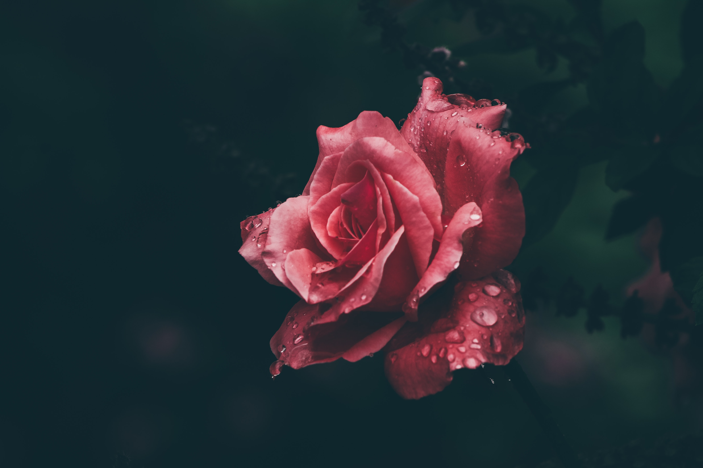

Hadmin
Roses

Estamos para ayudarte
Bienvenido
Esta aplicación fue desarrollada como un lugar donde usted puede asesorarse acerca del tema de violencia contra la mujer,
en este lugar usted contara con especialistas y estudiantes de pregrado capacitados para colaborarles con inquietudes y
procedimientos que pueda necesitar, de la misma manera también se le orientara acerca de este tema y seremos una gran herramienta
de apoyo, donde también puede desahogarse y contarnos su caso.
ion-item in a card, icon left, button right
View
This is content, without any paragraph or header tags,
within an ion-card-content element.